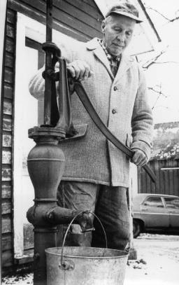
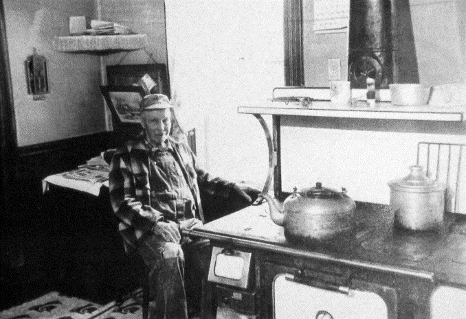

TO MOM IT WAS ALL IN A DAY’S WORK REMINISCENCE OF A DAUGHTER
By Carol Mayer Woods, Daughter of Martha Maurer & George Mayer
To the world, she was known as Mrs. George Mayer, or Martha, or Aunt Martha, or much later, Grandma; but to me, her daughter, she was just Mom. And - - her day started before mine.
MORNINGS
Dad was the first one up, probably 5:30 or 6:00 a.m. He would start the fire in the kitchen wood stove, get the first pails of water from the well water pump, fill the stove reservoir as well as the big aluminum teakettle which he moved to the front to heat. Then he went out to do his chores: milking, feeding stock, whatever had to be done.
Enter Mom. Besides planning and fixing breakfast, she would start planning her day. For instance, if it was Monday it was Wash Day or if it rained, then maybe Tuesday. Wash hung out to dry, and you always hoped for a sunny day to the beginning of the week. This is how it was before clothes dryers! That also meant lighting the stove in the summer kitchen and filling the wash boiler to heat water for the washing machine. (Maytags were “dependable” even back then!) If it was winter and too cold to use the summer kitchen, then the main kitchen stove was used. Mom or Daddy would pump pails of rain water from the underground cistern near the back door.
Of course, once the wash was done, as in: washed, rinsed, hung out to dry, taken down and brought in again, it would be set aside in baskets for the next day which was called Ironing Day.
Mom began the morning of Ironing Day by sprinkling, or dampening, as it was sometimes called, the dried clothes. That may seem silly after all the trouble it was drying the laundry. But don’t forget, this was before “Perma Press,” and, to get all the wrinkles out, the clothes had to be evenly moist so they would iron smooth. When Mom had dampened each piece, it would be rolled up and wrapped in a large cloth to keep the moisture in and then set aside for several hours ‘til it was ready to iron.
Also, daily she would start cooking the noon meal which was called Dinner, as opposed to the evening one called Supper. Dinner required more planning because meat, potatoes and vegetables were involved, and it had to be ready at noon when Daddy would be ready for a hearty meal after his morning’s work.
Saturday was usually the busiest morning (and day) of the week. That was Baking Day. Mom would get an early start since all our bread, rolls and such were made with yeast. She would mix the yeast dough and put it in a huge dishpan to rise on the warming shelf of the stove. After the kneading, rising, shaping, rising again, then the baking finally took place.
Sunday mornings were special – a break in the work routine, but just as busy. It was Church Day and everyone went. Mom not only had to get breakfast earlier and hurry us thru it but had to see that everyone was properly dressed and ready to go when Daddy got the car out. We had to get there on time –Daddy rang the bell for services, was also the Sunday School Superintendent, plus he sang bass in the church choir. Also, she had to have dinner plans made – it would be near noon when we got home.
AFTERNOONS
Whatever had been started in the morning was usually continued in the afternoon, as we saw on Washing and Baking Day. On Ironing Day, since the wash was now dampened and ready, the ironing board was set up. In the early years, the fleet of flat irons were put to heat on the fired-up wood stove. When one cooled, it was traded for a hot one.
When spring and summer came, the busiest afternoons took place when the garden produce was ready for canning. It was the only means of preserving – we had no freezer. Fruits and vegetables were all done this way; and when two or more crops were ready at the same time, the days really got hectic. The canner on the wood stove got a real workout! Jar after jar took its place on a rear table to cool, and later I would help carry the jars to the basement for storage.
To have some variety, Mom and Daddy would buy a bushel of peaches in season at the store in town and can them too. If they had items we didn’t have, they would trade their surplus for produce we had to spare. That was the way things were done in those days, and we all had a variety of foods to enjoy.
EVENINGS
Once supper was over and Daddy was done with his outside chores, his work day was done. He could read the paper or listen to the radio to get the latest news and weather. By eight o’clock or shortly after, he would say good night and head up to bed.
Mom, however, still had things to do. First were the daily dishes. Since water first had to be brought in from the pump, then heated on the stove to wash and rinse them, dishes were usually all done at once at night. Mom washed the dishes in one pan, rinsed them in another, and I dried and put them away. Once the dishes were done, I would have a little free time to play or read or, when I got older, do my homework from school.
But for Mom there were always some chores left to do. Whether it was the last of the ironing, straightening up, or something to put away, be it bakery, ironing or canning; it wouldn’t be left for the next day. Sometimes she took time to read the paper – she liked knowing what was going on in the world. Often, however, she would write letters. She kept up an active correspondence with relatives and friends who were too far away to visit very often.
This is how it was, being married to a miller/farmer in the early years. Mom’s days weren’t easy, but she took her job seriously and took pride in the work she did. When there were breaks in the daily routine (visits to neighbors, church activities, social events like weddings and dances, relatives coming to visit or family reunions), she would enjoy them as much as the rest of us. But, Mom was confident of her role in life, having been brought up to learn that doing a good job was its own reward. So, in being a good wife, mother and homemaker, she fulfilled her mission and made her own happiness along the way. Who of us wouldn’t be glad to say the same?